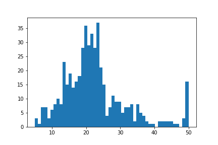
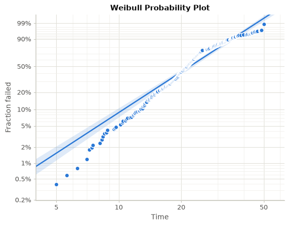
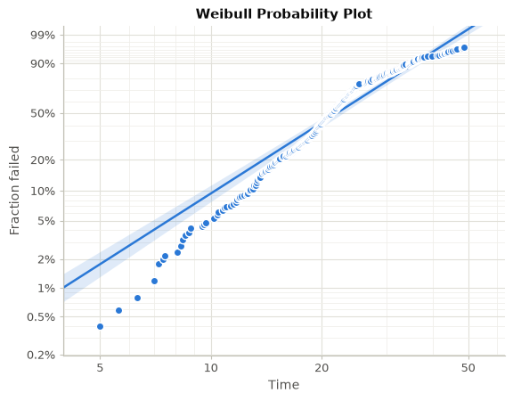
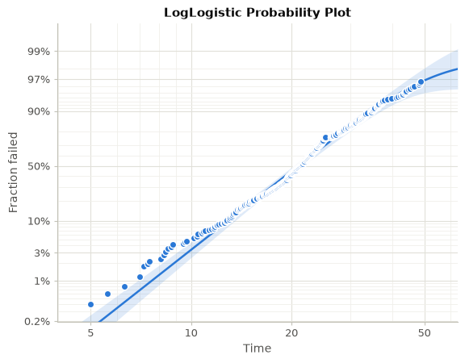
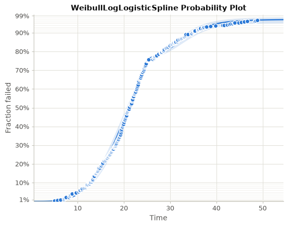
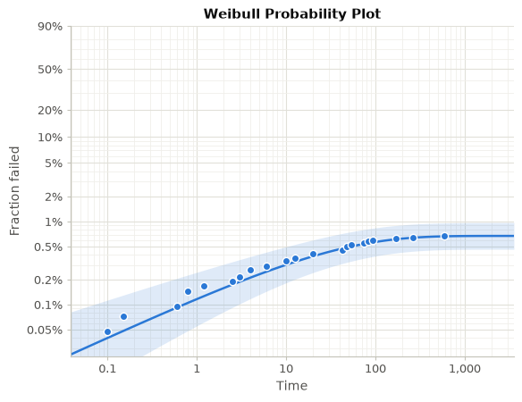
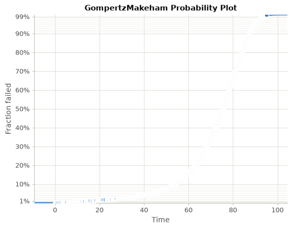
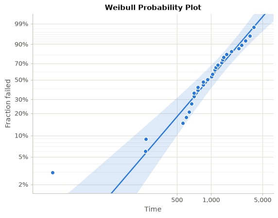
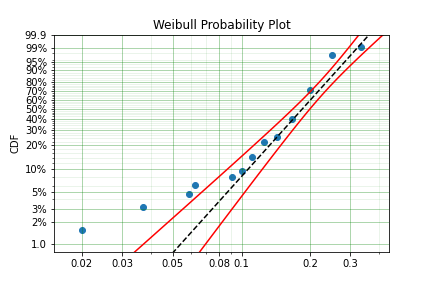
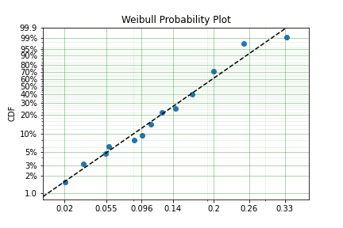

Example Applications
This section works through complete analyses from several fields, to show how SurPyval can be useful to you whatever your discipline. Each example touches ideas explained elsewhere: censoring (Types of Data), limited failure populations, offsets and saving models (Conventions), and custom distributions (Parametric SurPyval Modelling).
Boston House Prices
No statistical analysis package can avoid doing the ‘hello world’ task of analysing the ‘Boston House Pricing’ dataset. What might surprise some readers is that this would even be considered… The myriad blogs and Kaggle posts looking into this problem can not surely be improved upon. I agree, however, it is a good example of why one needs to be aware of censoring and how flexible the SurPyval API is when dealing with it. Looking at the boston house pricing dataset you can see that there is a suspicious number of houses at the top end that all have the same price:

On consideration, one can see that there are no houses above $50,000 and that the density at that point is much higher than we would expect because we would expect some form of a ‘fat-tail.’ That is, we should expect a decreasing number of houses at the highest costs. It is therefore safe to conclude that all values above $50,000 have been set to $50,000; which is to say that the sale price is right censored! And because it is a censored observation we will need to use an analysis tool that can handle censored observations, lest we may be wrong in our estimates of the distribution of housing prices. So lets load the data and see what results we can get, starting with the raw data.
import surpyval as surv
from surpyval.datasets import load_boston_housing
x = load_boston_housing()['medv'].values
x, c, n, _ = surv.SurpyvalData(x).to_xcnt()
model = surv.Weibull.fit(x, c, n)
print(model)
model.plot()
Parametric SurPyval Model
=========================
Distribution : Weibull
Fitted by : MLE
Data : 506 units: 506 events at 229 unique times
Parameters :
alpha: 25.38695258013028
beta: 2.5651902880594126
<Axes: title={'center': 'Weibull Probability Plot'}, xlabel='Time', ylabel='Fraction failed'>

From the above plot you can see that near 50, the parametric model diverges substantially from the actual data. So we can see that having not censored the highest values means that our model could be improved by doing so. Let’s see:
import surpyval as surv
from surpyval.datasets import load_boston_housing
x = load_boston_housing()['medv'].values
x, c, n, _ = surv.SurpyvalData(x).to_xcnt()
# Right censor the highest value
c[-1] = 1
model = surv.Weibull.fit(x, c, n)
print(model)
model.plot()
Parametric SurPyval Model
=========================
Distribution : Weibull
Fitted by : MLE
Data : 506 units: 490 events at 228 unique times, 16 right censored
Parameters :
alpha: 25.536695006070918
beta: 2.469159624046222
<Axes: title={'center': 'Weibull Probability Plot'}, xlabel='Time', ylabel='Fraction failed'>

We can see that the model has changed slightly, however, there appears to be a ‘disconnect’ near 24 that makes the model a poor fit above and below the value. Let’s see if a different distribution will improve the fit:
import surpyval as surv
from surpyval.datasets import load_boston_housing
x = load_boston_housing()['medv'].values
x, c, n, _ = surv.SurpyvalData(x).to_xcnt()
# Right censor the highest value
c[-1] = 1
model = surv.LogLogistic.fit(x=x, c=c, n=n, lfp=True)
print(model)
model.plot()
Parametric SurPyval Model
=========================
Distribution : LogLogistic
Fitted by : MLE
Data : 506 units: 490 events at 228 unique times, 16 right censored
Max Proportion (lfp_p): 0.986113461480471
Parameters :
alpha: 20.804405416620984
beta: 4.561904646436335
<Axes: title={'center': 'LogLogistic Probability Plot'}, xlabel='Time', ylabel='Fraction failed'>

This appears to be a much better fit, however, there is still quite a bit of difference between the data and the model in the middle of the distribution. Note also the lfp=True: the model allows a proportion \(1 - p\) of houses whose value is never reached by the distribution, which is one way of letting the fit put mass beyond the $50,000 cap. Lets create a custom spline to see if we can perfect the fit.
A CustomDistribution only needs the cumulative hazard function; SurPyval derives everything else from it. Our spline uses the Weibull cumulative hazard below a ‘knot’ and adds a LogLogistic cumulative hazard above it. The knot must stay within the range of the data, so rather than estimate the knot directly we estimate it as a fraction of the $50,000 cap, knot_frac, bounded between 0 and 1.
import surpyval as surv
from surpyval.datasets import load_boston_housing
from autograd import numpy as np
x = load_boston_housing()['medv'].values
x, c, n, _ = surv.SurpyvalData(x).to_xcnt()
# Right censor the highest value
c[-1] = 1
def Hf(x, *params):
x = np.array(x)
Hf = np.zeros_like(x)
knot = 50 * params[0] # knot_frac of the $50,000 cap
params = params[1:]
dist1 = surv.Weibull
dist2 = surv.LogLogistic
Hf = np.where(x < knot, dist1.Hf(x, *params[0:2]), Hf)
Hf = np.where(x >= knot, (dist1.Hf(knot, *params[0:2])
+ dist2.Hf(x, *params[2::])), Hf)
return Hf
bounds = ((0, 1), (0, None), (0, None), (0, None), (0, None),)
parameter_names = ['knot_frac', 'alpha_w', 'beta_w', 'alpha_ll', 'beta_ll']
name = 'WeibullLogLogisticSpline'
support = (0, np.inf)
WeibullLogLogisticSpline = surv.CustomDistribution(name, Hf, parameter_names, bounds, support)
model = WeibullLogLogisticSpline.fit(x=x, c=c, n=n, lfp=True)
print(model)
model.plot()
Parametric SurPyval Model
=========================
Distribution : WeibullLogLogisticSpline
Fitted by : MLE
Maximum : unverified -- not shown to be a maximum of the likelihood; check the fit (see the warning raised by fit)
Data : 506 units: 490 events at 228 unique times, 16 right censored
Max Proportion (lfp_p): 0.9708003284171278
Parameters :
knot_frac: 0.5040063564689241
alpha_w: 22.821867704708747
beta_w: 3.8893032909396412
alpha_ll: 32.37660213040598
beta_ll: 10.260697339561412
/tmp/ipykernel_3329/3571967550.py:27: UserWarning: The maximum-likelihood search did not reach a verified maximum of the likelihood (a point where the gradient is zero and the log-likelihood curves down in every direction); the parameters returned are the best point it found. The likelihood may have no maximum -- a parameter running off to a limit of its range -- or the search may have stalled: check the fit, or try another `init`. model = WeibullLogLogisticSpline.fit(x=x, c=c, n=n, lfp=True) /tmp/ipykernel_3329/3571967550.py:30: RuntimeWarning: The Wald confidence bound on sf at x = [0.5, 1.0454545454545454, 1.5909090909090908, 2.1363636363636362, 2.6818181818181817, 3.227272727272727, 3.7727272727272725, 4.318181818181818, 4.863636363636363, 5.409090909090908, 5.954545454545454, 6.5, 7.045454545454545, 7.59090909090909, 8.136363636363637, 8.681818181818182, 9.227272727272727, 22.318181818181817, 22.863636363636363, 23.409090909090907, 23.954545454545453, 24.5, 25.045454545454543, 25.59090909090909, 26.136363636363633, 26.68181818181818] is undefined: its delta-method variance is negative or not finite, so the parameter covariance is not positive definite (the estimate is at or near a boundary of the parameter space, or the likelihood is not regular there). nan is returned; a profile-likelihood or bootstrap interval, where the model has one, does not need the variance. model.plot()
<Axes: title={'center': 'WeibullLogLogisticSpline Probability Plot'}, xlabel='Time', ylabel='Fraction failed'>

Much better! The knot sits at about half the cap, near $25,000, which is where the ‘disconnect’ in the earlier plots was.
The two warnings are worth reading. The knot makes the cumulative hazard bend sharply where one piece meets the other, so the log-likelihood has a kink rather than a smooth peak, and SurPyval cannot confirm that the answer is a maximum: at a kink the gradient need not be zero, and the parameter covariance (the inverse of the curvature) is not positive definite here. The fit is still the best point the search found, but the Wald confidence bounds, which rely on that covariance, do not exist where the delta-method variance is negative, so the plot’s bounds are missing over part of the range. A bootstrap would give intervals for a model like this.
It must be said that this is a bit ‘hacky’. There is no theory that we are using to guide the choice of the spline model, we are simply finding the best fit to the data. For example, this model could not be used for extrapolation too far beyond $50,000, this is because the model is limited to 97.1% of houses (the fitted \(p\)). A separate spline would be needed to model those data. The extra flexibility also has a cost: five parameters plus \(p\) can fit almost any smooth curve, so a better fit on its own is weak evidence that the model is right. However, the example shows the importance of censoring and the power of the surpyval API!
Applied Reliability Engineering
In reliability engineering we might be interested in the proportion of a population that will experience a particular failure mode. We do not want to ship the items that will fail so that our customers do not have a poor experience. But, we will want to determine the minimum duration of a test that can establish whether a component will fail. This is because a test that is too long we will waste time and money in testing and if a test is too short we will ship too many items that will fail in the field. We need to optimise this interval the minimize the cost of testing but also the number of items at risk in the field.
Using data from the paper that introduced the Limited Failure Population model (also known as the Defective Subpopulation) to the reliability engineering world [Meeker] we can show how surpyval can be used in part to calculate an optimal ‘burn-in’ test duration.
In the test, 4,156 integrated circuits were run for 1,370 hours, and 28 of them failed. The failures bunch up early and then stop, even though thousands of units are still running: most of the units are simply not susceptible to this failure mode. An ordinary distribution would insist that every unit fails eventually and would badly misjudge the tail. A limited failure population (LFP) model, lfp=True, adds a parameter \(p\), the proportion of the population that is susceptible (defective), so that \(F(t) = p\,F_0(t)\); see Conventions for the full definition.
import surpyval as surv
f = [.1, .1, .15, .6, .8, .8, 1.2, 2.5, 3., 4., 4., 6., 10., 10.,
12.5, 20., 20., 43., 43., 48., 48., 54., 74., 84., 94., 168., 263., 593.]
s = [1370.] * 4128
data = surv.SurpyvalData.from_observations(observed=f, right_censored=s)
model = surv.Weibull.fit(data, lfp=True)
print(model)
print("negative log-likelihood:", model.neg_ll())
model.plot()
Parametric SurPyval Model
=========================
Distribution : Weibull
Fitted by : MLE
Data : 4156 units: 28 events at 21 unique times, 4128 right censored
Max Proportion (lfp_p): 0.00674428917816744
Parameters :
alpha: 28.3669476011051
beta: 0.4959814893123006
negative log-likelihood: 293.0328879955159
<Axes: title={'center': 'Weibull Probability Plot'}, xlabel='Time', ylabel='Fraction failed'>

LFP likelihoods can be awkward to optimise: the proportion \(p\) and the shape of the failure distribution trade off against each other, and the likelihood can have more than one optimum. So an LFP fit with no init starts the optimiser twice – from the distribution’s usual starting point and from a fit to the failures alone (under an LFP the failed units are the susceptible subpopulation, and \(p\) starts at the observed failure fraction) – and keeps the better likelihood. You can still pass init (the Weibull \(\alpha\) and \(\beta\), then \(p\)), and it is always worth sanity-checking the answer. Here the fitted \(p\) is essentially the observed failure fraction of \(28/4156 \approx 0.67\%\), as it should be, since the fitted Weibull says nearly all the susceptible units have failed long before 1,370 hours. A fit that reported a \(p\) far above the observed fraction, with a worse (higher) negative log-likelihood, would be one to distrust.
We can see from these results that at maximum we will have approximately 0.67% fail. If the company accepts a 0.1% probability of their products failing in the field then we can calculate the interval at which the difference between the total population and the proportion failed in the test is 0.1%. That is, we need the burn-in duration \(T\) with \(p - F(T) = 0.001\), or \(T = F^{-1}(p - 0.001)\), which is the quantile function of the model:
field_risk = 0.001
burn_in = model.qf(model.lfp_p - field_risk)
print("burn-in duration :", burn_in)
print("defectives left after it :", model.lfp_p - model.ff(burn_in))
burn-in duration : 104.43241348911074
defectives left after it : 0.001
Therefore we should do a burn in test up to approximately 104.4 to make sure we minimize the number of items shipped that are defective while also minimizing the duration of the test. We can simply change the value of field_risk in the above code to any value we may wish to use. (Strictly, the proportion of shipped units that are defective is \((p - F(T)) / (1 - F(T))\), since the units that failed in burn-in are not shipped; with only about 0.6% removed by the burn-in the difference is negligible here.)
Demographics / Actuarial
In demographics and actuarial studies, the distribution of the life of a population is of interest. For the demographer, it is necessary to understand how a population might change, in particular, how the expected lifespan is changing over time. The same applies to an actuary, an actuary is interested in lifetimes to understand the risk of payouts among those who own a life insurance policy.
The Gompertz-Makeham is a distribution used in demography and actuarial studies to estimate the lifetime of a population. Its hazard is the sum of an age-independent term \(\lambda\) (accidents, infections) and a term that grows exponentially with age, \(\alpha e^{\beta x}\) (ageing):
This can be implemented in surpyval with relative ease: a CustomDistribution only needs the cumulative hazard \(H(x)\), and SurPyval derives the density, the survival function and everything else from it. (Note the \(-1\): a cumulative hazard must be zero at \(x = 0\).)
import surpyval as surv
from autograd import numpy as np
from matplotlib import pyplot as plt
from scipy.special import lambertw
bounds = ((0, None), (0, None), (0, None),)
support = (0, np.inf)
parameter_names = ['lambda', 'alpha', 'beta']
def Hf(x, *params):
Hf = params[0] * x + (params[1]/params[2])*(np.exp(params[2]*x) - 1)
return Hf
GompertzMakeham = surv.CustomDistribution('GompertzMakeham', Hf, parameter_names, bounds, support)
We now have a GM distribution object that can be used to fit data. But we need some data:
# GM qf()
def qf(p, params):
lambda_ = params[0]
alpha = params[1]
beta = params[2]
return (alpha/(lambda_ * beta) - (1./lambda_)*np.log(1 - p)
- (1./beta)*lambertw((alpha*np.exp(alpha/lambda_)*(1 - p)**(-(beta/lambda_)))/(lambda_))).real
np.random.seed(1)
params = np.array([.68, 28.7e-3, 102.3])/1000
# The closed-form quantile overflows for a few draws very close to 1.
with np.errstate(over="ignore", invalid="ignore"):
x = qf(np.random.uniform(0, 1, 10_000), params)
# Filter out those numeric overflows.
x = x[np.isfinite(x)]
The parameters for the distribution come from [Gavrilov], specifically the parameters for the lifespans of the 1974-1978 data. So in this case we have (simulated) data on the lifespans of almost 10,000 people and we need to determine the GM parameters. This can be compared to the historic parameters to see if the age related mortality has changed or has remained roughly constant. To do so, all we need do with surpyval is to put the data to the fit() method.
One practical point: a CustomDistribution knows nothing about its parameters beyond their bounds. Mortality rates are of the order of \(10^{-3}\) to \(10^{-5}\) per year, and started at 1 the likelihood of human lifetimes is so astronomically poor that it is flat to machine precision. So the default starting point is chosen by likelihood from a coarse grid of magnitudes for each parameter (\(10^{-6}\) to \(10^{2}\), and the data’s own scale), which lands in the right basin here. You can still pass init when you know the right order of magnitude, and it is always worth checking that the fitted parameters of a custom distribution are sensible.
model = GompertzMakeham.fit(x)
model.plot(alpha_ci=0.01, heuristic='Nelson-Aalen')
model
Parametric SurPyval Model
=========================
Distribution : GompertzMakeham
Fitted by : MLE
Data : 9924 units: 9924 events at 9924 unique times
Parameters :
lambda: 0.0007484687948495583
alpha: 2.1578804358573487e-05
beta: 0.10678472648371438

The fitted parameters are close to the ones used to simulate the data (\(\lambda = 6.8 \times 10^{-4}\), \(\alpha = 2.87 \times 10^{-5}\), \(\beta = 0.1023\)). \(\alpha\) is the least precisely determined of the three, because a smaller \(\alpha\) with a larger \(\beta\) produces a very similar mortality curve over the ages where most deaths occur.
You can see that the model is a good fit to the data. Using the model we can determine the probability of death in a given term for a random individual from the population. This is useful to price the premium of a life insurance policy. For example, if a 60 year old was to take out a two year policy, what premium should we charge them for the policy. First, we need to determine the probability of death.
Care is needed here. \(F(62) - F(60)\) is the probability, at birth, of dying between 60 and 62. Our applicant has already survived to 60, so what we need is the conditional probability
which is one minus the conditional survival, cs(2, 60): the probability of surviving a further 2 years having survived 60.
p_death = 1 - model.cs(2, 60)
policy_payout = 100_000
expected_loss = policy_payout * p_death
print(f"P(death in the term) : {p_death:.4f}")
print(f"expected loss : ${expected_loss:,.2f}")
print(f"ignoring survival to 60 would give P = {model.ff(62) - model.ff(60):.4f}")
P(death in the term) : 0.0302
expected loss : $3,019.39
ignoring survival to 60 would give P = 0.0255
From the results above, you can see that the probability of death over the two year interval is approximately 3.0%. Given the contract is to payout $100,000 in this event, the expected loss is therefore $3,019.39. Therefore, to make a profit, the policy will need to cost more than $3,019.39. So say the company has a strategy of making 10% from each policy, the policy cost to the individual would therefore be $3,321.32. If we divide this payment scheme into a per month basis over the two years we get a monthly payment of $138.39 for two years (in the case of death the amount owing can be subtracted from the payout). Using the unconditional probability instead would have underpriced the policy by about 15%, because it spreads part of the risk over the people who never reach 60.
Although this is a basic example, as insurance companies would have much more sophisticated models, it shows the basics of how demographic and actuarial data can be used. This shows the application of surpyval to actuarial and demographic studies.
Applied Reliability Engineering - 2
In reliability engineering you can come across the case where a new product has been built that is similar in design to a previous, but has better materials, geometry, seals, etc. You have data from the tests of the old product and new results for the same test on the new product. The only problem, the new product only had one failure in the test! What will you do?
Given the similarities, it is common to use the same shape parameter, the \(\beta\) value, from a similar product as an initial estimate. In this case, we may need to know the reliability of the item in the field. We can create a model of this new product, but first the old product:
import surpyval as surv
x_old = [ 5.2, 10.7, 16.3, 22. , 32.9, 38.6, 42.1, 58.7, 92.8, 93.8]
old = surv.Weibull.fit(x_old)
print(old)
Parametric SurPyval Model
=========================
Distribution : Weibull
Fitted by : MLE
Data : 10 units: 10 events at 10 unique times
Parameters :
alpha: 45.27418574017995
beta: 1.3776232963005317
We can use the above value of beta with the new data:
x_new = [87, 100]
c_new = [0, 1]
n_new = [1, 9]
surv.Weibull.fit(x_new, c_new, n_new, fixed={'beta' : 1.3776}, init=[100.])
Parametric SurPyval Model
=========================
Distribution : Weibull
Fitted by : MLE
Data : 10 units: 1 event at 1 unique time, 9 right censored
Parameters :
alpha: 525.2270099535145
beta: 1.3776
The characteristic life of the new bearing is over 10 times higher! Quite an improved new design. This new model can be used as part of the sales of the new product (10x more life!) and to provide recommendations for maintenance.
Economics
Economists are interested in the times between recessions. This information helps them formulate policy prescriptions that may (or may not) reduce the duration of a recession, or the time between recessions. Using data from Tadeu Cristino et al. [TC] on the US business cycle, we can estimate the distribution of the time from the end of one recession to the start of the next.
import numpy as np
import pandas as pd
import surpyval as surv
start = [np.nan, "June 1857", "October 1860", "April 1865", "June 1869",
"October 1873", "March 1882", "March 1887", "July 1890", "January 1893",
"December 1895", "June 1899", "September 1902", "May 1907", "January 1910",
"January 1913", "August 1918", "January 1920", "May 1923", "October 1926",
"August 1929", "May 1937", "February 1945", "November 1948", "July 1953",
"August 1957", "April 1960", "December 1969", "November 1973",
"January 1980", "July 1981", "July 1990", "March 2001", "December 2007"]
end = [
"December 1854", "December 1858", "June 1861", "December 1867", "December 1870",
"March 1879", "May 1885", "April 1888", "May 1891", "June 1894", "June 1897",
"December 1900", "August 1904", "June 1908", "January 1912", "December 1914",
"March 1919", "July 1921", "July 1924", "November 1927", "March 1933",
"June 1938", "October 1945", "October 1949", "May 1954", "April 1958",
"February 1961", "November 1970", "March 1975", "July 1980", "November 1982",
"March 1991", "November 2001", "June 2009"
]
df = pd.DataFrame({'start' : pd.to_datetime(start, format="%B %Y"),
'end' : pd.to_datetime(end, format="%B %Y")})
# Compute time from end of last recession to peak of next.
x = (df.start - df.end.shift(1)).dropna().dt.days.values
model = surv.Weibull.fit(x, offset=True)
print(model)
model.plot()
Parametric SurPyval Model
=========================
Distribution : Weibull
Fitted by : MLE
Data : 33 units: 33 events at 29 unique times
Offset (gamma) : 304.0659174831258
Parameters :
alpha: 895.3217815470507
beta: 1.062949128733279
<Axes: title={'center': 'Weibull Probability Plot'}, xlabel='Time', ylabel='Fraction failed'>

You can see from the above the data is a good fit to the model! Great. So now what?
First, note the offset=True. This fits a three parameter Weibull, with a location \(\gamma\) below which no value can occur: here \(\gamma\) is about 304 days, so the model says an expansion has never lasted, and will not last, less than about ten months. That is consistent with the data (the shortest expansion in it is 306 days) and has a plausible economic reading, but an offset is a strong claim about the tail, so it deserves the same scrutiny as any other modelling choice.
We can communicate what the expected time between recessions is:
model.mean()
np.float64(1178.249652202336)
Therefore the average growth period is 1,178 days, or about 3.2 years between recessions (the plain average of the 33 observed expansions is 1,179 days, so the model and the data agree).
References
Tadeu Cristino, C., Żebrowski, P., & Wildemeersch, M. (2020). Assessing the time intervals between economic recessions. PloS one, 15(5), e0232615.
Duwe, G., Sanders, N. E., Rocque, M., & Fox, J. A. (2021). Forecasting the Severity of Mass Public Shootings in the United States. Journal of Quantitative Criminology, 1-39.
Gavrilov, L. A., Gavrilova, N. S., & Nosov, V. N. (1983). Human life span stopped increasing: why?. Gerontology, 29(3), 176-180.
William Q. Meeker (1987) Limited Failure Population Life Tests: Application to Integrated Circuit Reliability, Technometrics, 29(1), 51-65
Social Science / Criminology
Another application of surpyval is when encountering extreme values. The Weibull distribution is one of the limiting cases of the Generalized Extreme Value distribution. In other words, the Weibull distribution is the distribution that can model the strength of a chain because it can model the extreme value, in this case the minimum, of a collection of distributions. A chain is only as strong as its weakest link. If a chain has many links, each with a strength drawn from the same distribution (bounded below, as strengths are), then the strength of the chain will approximately follow a Weibull distribution. It is for this reason that the Weibull distribution is so widely used.
Another extreme value is the maximum. The maximum extreme value distribution is the Frechet distribution. But the reciprocal of a maximum is the minimum of the reciprocals, \(1/\max_i x_i = \min_i (1/x_i)\). Therefore, if we know our data is following a process of finding a maximum, we can model the reciprocals of the data with the Weibull distribution.
Warning
This may be a distressing topic for some readers.
Social scientists and criminologists are interested in understanding the phenomena of mass shootings in an effort to eliminate the scourge from society. A mass shooting is an extreme event, and an extreme event can be modelled to understand the risks of future occurrence, and with that understanding, the effect of interventions can also be understood.
Using the gun violence data from Kaggle we can model the process. That is, if we take the maximum number of deaths in a given month over several years, we have data that can be used to estimate the probability of something even worse occurring. This data covers the period from 2013 to 2018, see Kaggle for more details.

It is worth remembering that since we have taken the reciprocal, it is the lower values that represent more victims. And it is the extremes that we are trying to capture. You can see from the above plot that the model does not fit the data from 0.02 to 0.1 very well. We can try a different approach: probability plotting with an offset.

You can see that this model is a much better description of the data. However, the problem is that it cannot have a real interpretation. Because the offset is negative, there is a non-zero probability of values at and below 0, which, because we took reciprocals, means that there is a non-zero probability of having a shooting with infinite victims. This model is therefore not a good option for such extreme extrapolations. The model can however, be used to estimate the probability of having a shooting as bad or worse than the most extreme event up to 2040.
The model estimates that there is an approximately 1.6% chance of an event killing 50 or more people in a given month, which may seem low, however, because there are 216 months between 2022 and 2040 the chances of not having as extreme an event over that time period becomes horrifyingly small. The model suggests a 97.0% chance that, between 2022 and 2040, there is at least one month with an event in which 50 or more people are killed. Chilling.
This is a lot higher than other forecasts of the same event, see [Duwe] who report a 35% probability, which is some, but not even close to complete, relief.